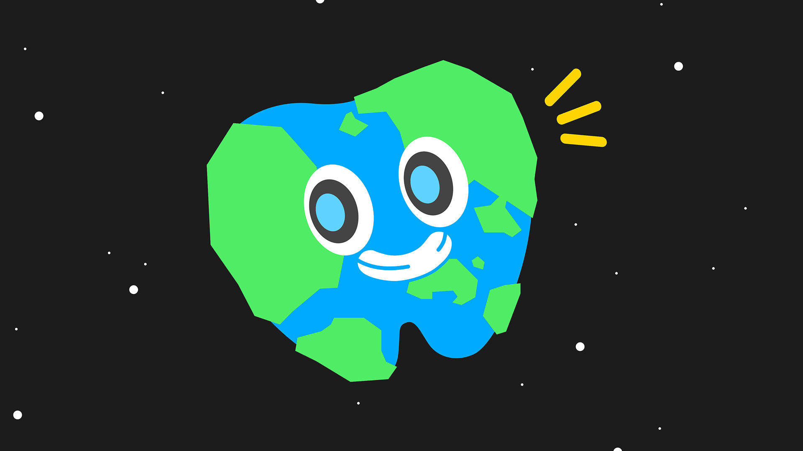
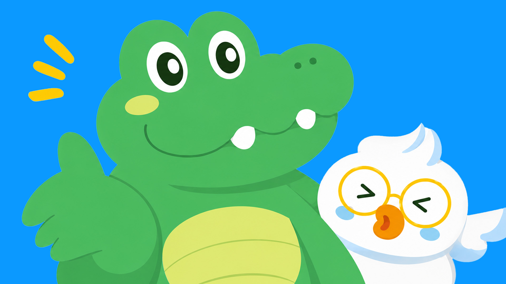

새로운 친구, 양치별에 오다
아푸와 치카는 지구에서 온 아이를 새로운 양치 수호대원으로 맞이합니다. 우당탕탕 양치별 모험의 시작!
평화롭던 양치별에 이상한 문제가 생기기 시작했어요

아푸와 치카는 지구에서 온 아이를 새로운 양치 수호대원으로 맞이합니다. 우당탕탕 양치별 모험의 시작!

치카는 어금니가 음식을 꼭꼭 씹는 중요한 치아라고 알려줍니다. 아이들은 어금니의 위치와 역할을 함께 배워요.

치카가 양치별을 지키는 특별한 도구, 칫솔을 소개해요. 수호대와 함께 칫솔을 바르게 사용하는 방법을 배워요.

어금니 사이에 숨어 있는 음식물을 찾아내며 꼼꼼한 양치를 익혀요.

나쁜 세균들이 모인 마을을 지나며 양치가 필요한 이유를 이해해요.

사자 아저씨의 반짝이는 이를 보며 올바른 양치 습관을 배워요.

아푸와 치카가 함께 양치 순서를 따라 하며 실천을 준비해요.

아푸의 안내를 따라 입속 구석구석을 차례대로 닦아봐요.

곧 새로운 이야기가 열릴 예정이에요

곧 새로운 이야기가 열릴 예정이에요

곧 새로운 이야기가 열릴 예정이에요

곧 새로운 이야기가 열릴 예정이에요